🏠💼 INTEGRATED DASHBOARD: HOUSEHOLDS & CORPORATE DATA
Comprehensive analysis combining Top 10% Richest Households and Top 10% Corporate Power OFFICIAL GOVERNMENT DATA
Corporate Data: U.S. Census Bureau - County Business Patterns 2021
Geographic Coverage: 7 Major Metro Areas Only (Los Angeles, New York, Chicago, Dallas, Houston, Miami, San Francisco)
Note: Top 10% rankings are relative to these 7 metros, not the entire United States. Revenue figures are estimated using Census/BLS benchmarks.
📊 Key Statistics
🎯 INTERSECTION: Where Wealth Meets Corporate Power
197 ZIP codes are in BOTH Top 10% Household Wealth AND Top 10% Corporate Power
This represents 72.4% of wealthy household ZIPs and 6.4% of corporate power ZIPs.
Intersection Statistics:
• 849,516 Households $200k+
• 4,802,648 Total Employment
• $960.5B Estimated Revenue
• $351 Median AGI
• 18.74 Median Corporate Power Index
📈 Advanced Statistics: Household vs Corporate Wealth
Household Wealth (Top 10%)
Threshold: Geometric Score >= 9.48%
ZIPs: 272
Total HH $200k+: 1,040,340
Median AGI: $341
Total Population: 6.7M
Corporate Power (Top 10%)
Threshold: Corporate Power Index >= 14.86
ZIPs: 3,092
Total Employment: 55,919,796
Total Revenue: $11,184.0B
Power Industries Emp: 21,015,319
Correlation Analysis
Correlation Coefficient: 0.261
Measures the relationship between Household Geometric Score and Corporate Power Index. Values range from -1 (perfect negative) to +1 (perfect positive). A value of 0.261 indicates a positive correlation.
🗺️ Interactive Maps
Household Maps (Top 10% Richest)
National Map Los Angeles (46) New York (132) Chicago (20) Dallas (17) Houston (28) Miami (6) San Francisco (23)
Corporate Maps
🌎 National:
National Corporate Top 10%
All ZIPs:
All - Los Angeles
All - New York
All - Chicago
All - Dallas
All - Houston
All - Miami
All - San Francisco
Top 10% Corporate Power ZIPs:
Top 10% - Los Angeles
Top 10% - New York
Top 10% - Chicago
Top 10% - Dallas
Top 10% - Houston
Top 10% - Miami
Top 10% - San Francisco
🎯 Overlay Maps (Household + Corporate Combined):
🌎 National Intersection
Overlay - Los Angeles
Overlay - New York
Overlay - Chicago
Overlay - Dallas
Overlay - Houston
Overlay - Miami
Overlay - San Francisco
Legend: ■ Purple = Intersection (Both Top 10%), ■ Red = Household Top 10% Only, ■ Blue = Corporate Top 10% Only
🏙️ Intersection by City
| City | HH Top 10% | Corp Top 10% | INTERSECTION | % of HH | % of Corp | HH $200k+ | Employment | Revenue ($M) |
|---|---|---|---|---|---|---|---|---|
| Los Angeles | 46 | 252 | 44 | 95.7% | 17.5% | 163,934 | 655,420 | $131,084 |
| New York | 132 | 189 | 70 | 53.0% | 37.0% | 333,127 | 2,221,938 | $444,388 |
| Chicago | 20 | 77 | 19 | 95.0% | 24.7% | 87,399 | 668,341 | $133,668 |
| Dallas | 17 | 86 | 15 | 88.2% | 17.4% | 55,831 | 373,620 | $74,724 |
| Houston | 28 | 59 | 21 | 75.0% | 35.6% | 93,106 | 576,680 | $115,336 |
| Miami | 6 | 146 | 6 | 100.0% | 4.1% | 10,846 | 56,259 | $11,252 |
| San Francisco | 23 | 111 | 22 | 95.7% | 19.8% | 105,273 | 250,390 | $50,078 |
🏙️ City Breakdown - Integrated View
| City | HOUSEHOLDS (Top 10%) | CORPORATE (Top 10%) | ||||||
|---|---|---|---|---|---|---|---|---|
| ZIPs | HH $200k+ | Med AGI | Med Score | ZIPs | Employment | Revenue ($M) | Power % | |
| Los Angeles | 46 | 169,722 | $322 | 12.78% | 252 | 4,860,964 | $972,193 | 45.9% |
| New York | 132 | 476,222 | $343 | 12.39% | 189 | 4,213,924 | $842,785 | 46.6% |
| Chicago | 20 | 92,187 | $322 | 13.67% | 77 | 2,104,062 | $420,812 | 39.4% |
| Dallas | 17 | 61,850 | $279 | 11.11% | 86 | 2,142,101 | $428,420 | 41.6% |
| Houston | 28 | 117,330 | $205 | 11.45% | 59 | 1,484,271 | $296,854 | 39.2% |
| Miami | 6 | 10,846 | $803 | 11.86% | 146 | 2,404,848 | $480,970 | 42.5% |
| San Francisco | 23 | 112,183 | $457 | 11.11% | 111 | 2,586,920 | $517,384 | 45.7% |
🏠 Household Analysis (Top 10% Richest)


 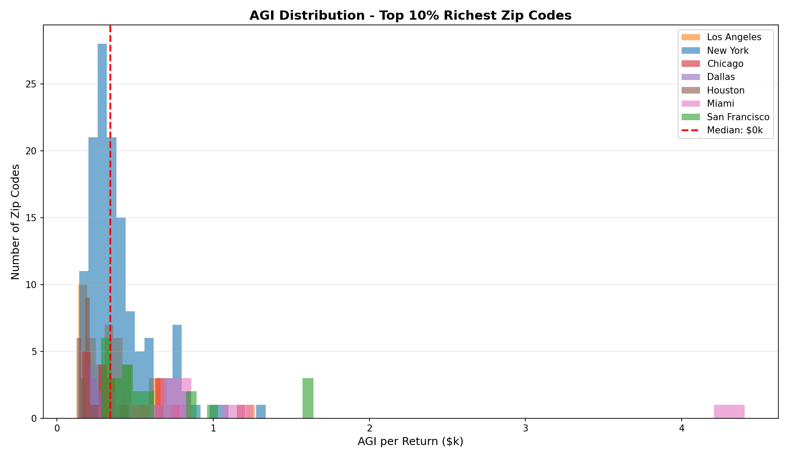
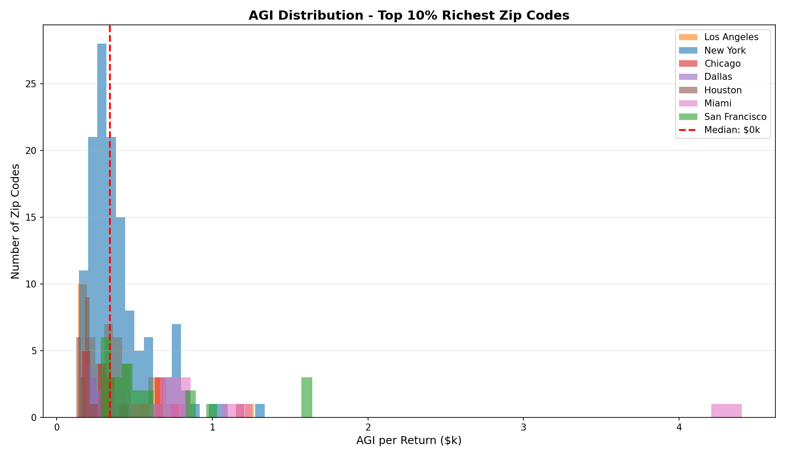
Geographic Analysis

📥 Download Distance Data (CSV)
Distance vs Travel Time Analysis
Note: Data has been cleaned to exclude entries with impossible speeds (> 120 km/h) or missing travel times.
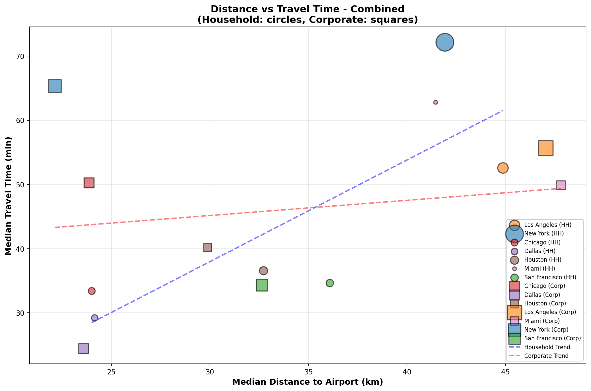Combined Chart: Shows both Household (circles) and Corporate (squares) data together. Bubble size represents number of top 10% ZIPs.
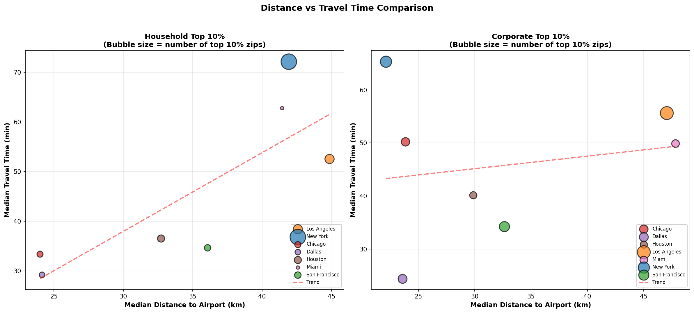Side-by-Side Comparison: Household and Corporate data shown separately for direct comparison.
Weighted Averages

📥 Download Weighted Averages (CSV)
HH $200k+ by Region

🏢 Corporate Statistical Analysis (Top 10% Corporate Power)
Data Source: U.S. Census Bureau - County Business Patterns 2021
Direct Government Data: Establishments, Employment, Payroll from Census API (100% real counts)
Estimates: Revenue estimated using BLS revenue-per-employee ratios (see Methodology Section 12)
Distribution Analysis
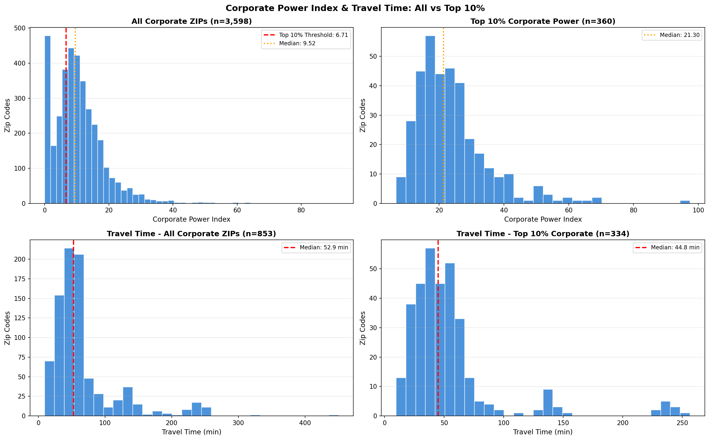 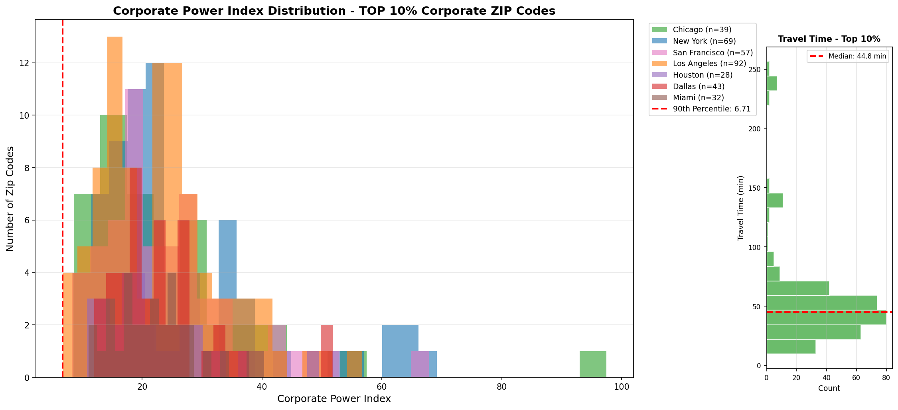 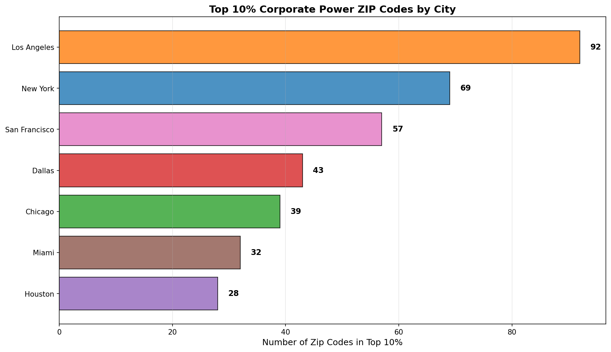 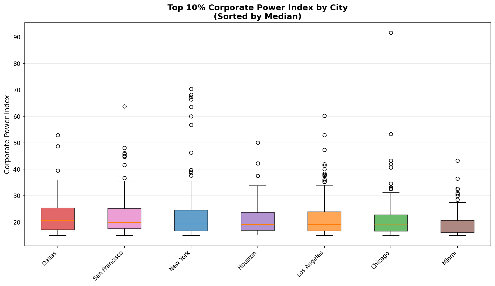Revenue & Employment
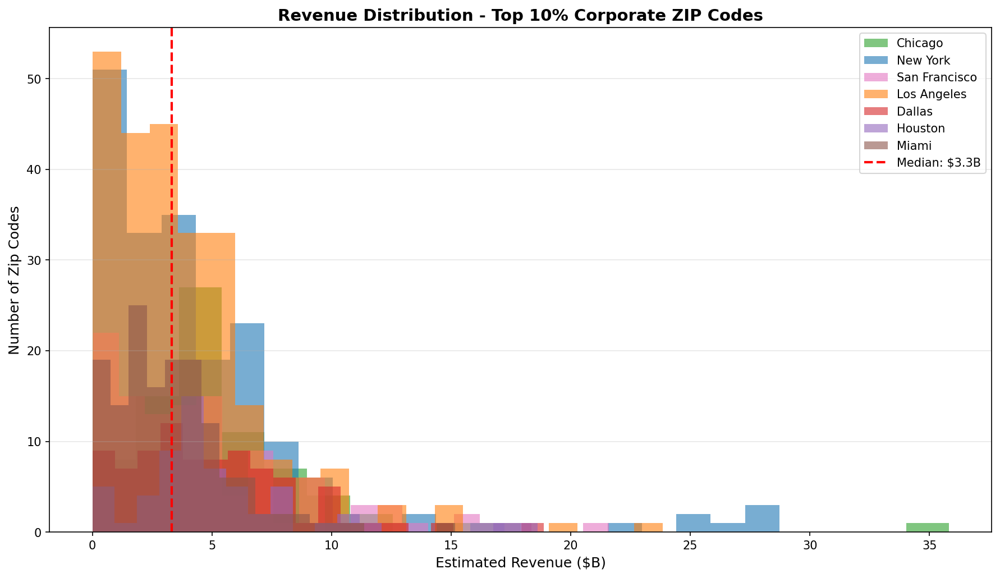 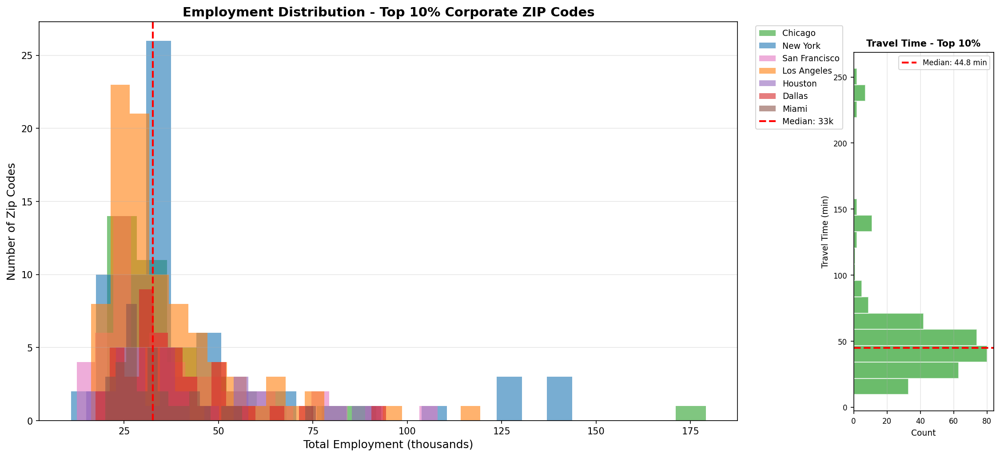Power Industries
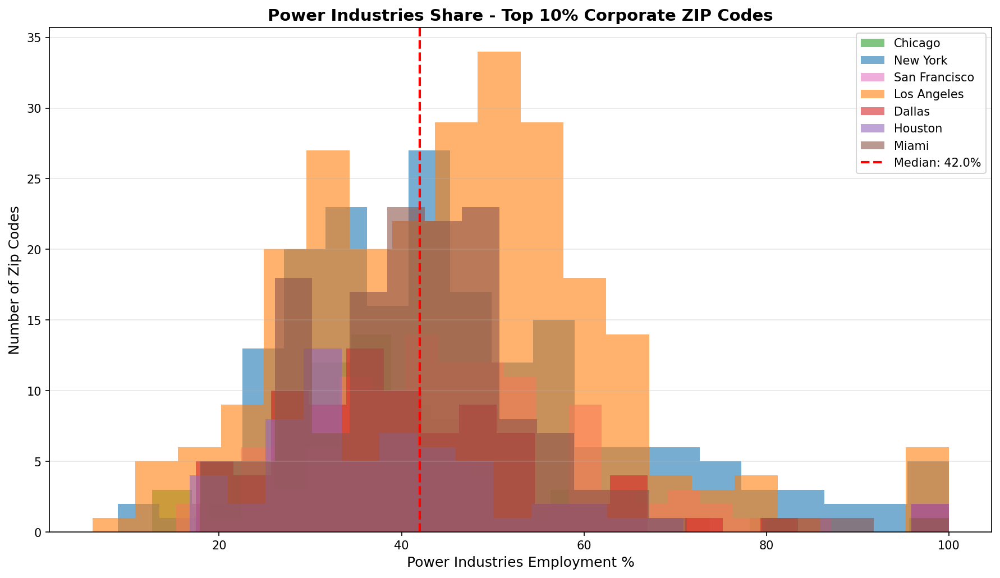 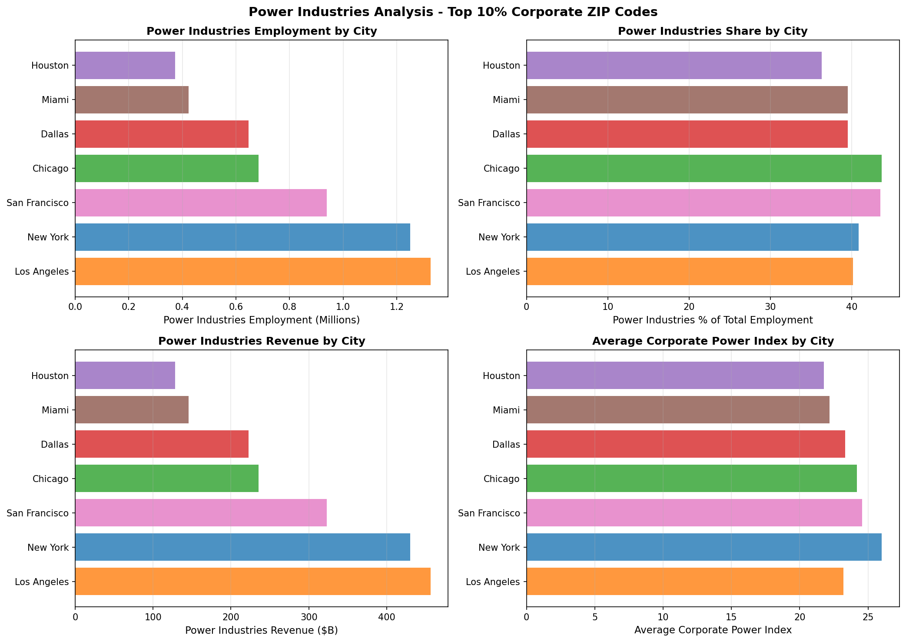📥 Download Power Industries by Region (CSV)
Geographic Analysis

📥 Download Distance Data (CSV)
Distance vs Travel Time Analysis
Note: Data has been cleaned to exclude entries with impossible speeds (> 120 km/h) or missing travel times.
Combined Chart: Shows both Household (circles) and Corporate (squares) data together. Bubble size represents number of top 10% ZIPs.
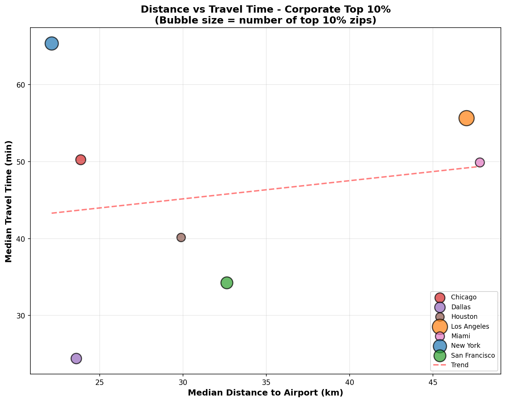Corporate Only: Focus on corporate top 10% ZIPs with travel times from Google Distance Matrix API.
Side-by-Side Comparison: Household and Corporate data shown separately for direct comparison.
📥 Download Corporate Distance & Travel Time Data (CSV)
📥 Download Household Distance & Travel Time Data (CSV)
Weighted Averages
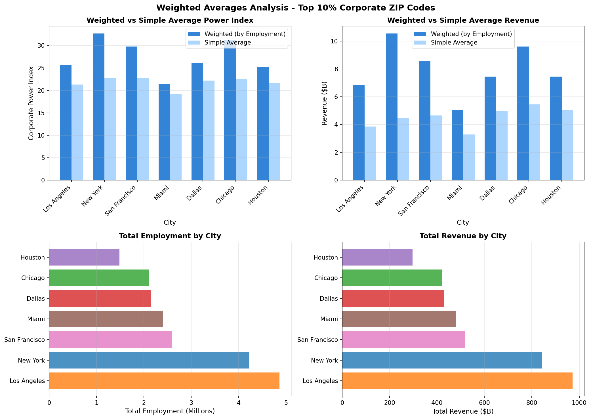📥 Download Weighted Averages (CSV)
Comparative Analysis
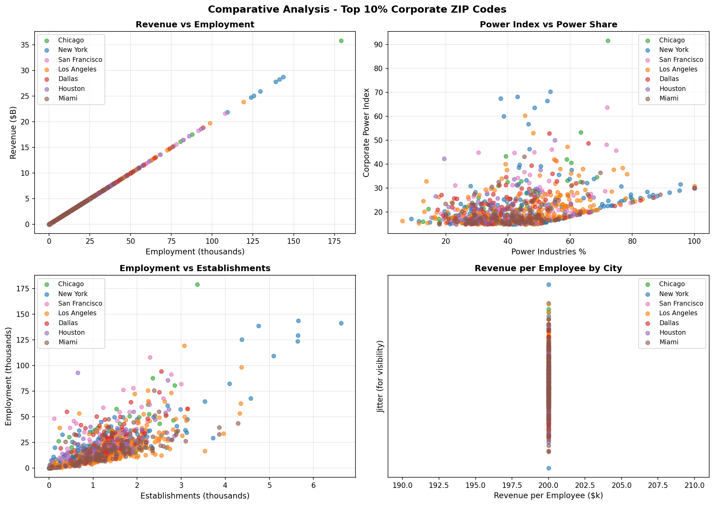
Top Left: Revenue vs Employment correlation
Top Right: Power Index vs Power Share relationship
Bottom Left: Employment vs Establishments density
Bottom Right: Revenue per Employee by city
✈️ Cluster Analysis: Intersection ZIPs × Airport Infrastructure
Analysis Focus: Clustering of 197 "Golden Intersection" ZIPs (Top 10% in BOTH households and corporate) by proximity to airports and heliports
Data Sources: FAA Airport Database 2024, Intersection Analysis CSV
Methods: K-Means, DBSCAN, Hierarchical Clustering + Distance/Accessibility Metrics
📚 Complete Documentation & Methodology
Interactive Cluster Maps
Explore clusters of premium ZIPs around airport/heliport infrastructure. Maps show ZIP polygons colored by cluster, with airports (red markers) and heliports (blue markers), plus radius circles and connection lines.
🗺️ Los Angeles Clusters 🗺️ New York Clusters 🗺️ Chicago Clusters 🗺️ Dallas Clusters 🗺️ Houston Clusters 🗺️ Miami Clusters 🗺️ San Francisco Clusters 🌎 National Overview
Network Graphs: ZIP-Airport Connections
Network visualizations showing how intersection ZIPs connect to airport/heliport infrastructure. Node size reflects importance (score, employment), edge thickness shows proximity.
Los Angeles


New York


Chicago


Dallas


Houston


Miami


San Francisco


National Overview

Statistical Analysis: Distance vs Combined Score
Correlation analysis between airport proximity and premium ZIP scores. Points colored by cluster, sized by employment. Shows whether closer airport access correlates with higher value areas.
Los Angeles

New York

Chicago

Dallas

Houston

Miami

San Francisco

Hierarchical Clustering Dendrograms
Hierarchical tree structure showing how ZIPs group together based on location and airport distance. Reveals nested relationships and natural groupings.
Los Angeles

New York

Chicago

Dallas

Houston

Miami

San Francisco

Distance Heatmaps: ZIPs × Airports
Matrix showing distances (km) between sample ZIPs and airports. Darker red = farther, green = closer. Helps identify which ZIPs have access to which airports.
Los Angeles

New York

Chicago

Dallas

Houston

Miami

San Francisco

Cluster Metrics Comparison (Box Plots)
Compare distribution of key metrics across clusters: airport distance, combined score, employment, and revenue. Identifies which clusters are "airport hubs" vs "suburban elite" vs "executive corridors".
Los Angeles

New York

Chicago

Dallas

Houston

Miami

San Francisco

Accessibility Analysis (By Distance Range)
Bar charts showing how many ZIPs fall into each distance range (0-10km, 10-20km, etc.) for nearest airport (red) and nearest heliport (blue). Identifies which metros have best infrastructure accessibility.
Los Angeles

New York

Chicago

Dallas

Houston

Miami

San Francisco

Cluster Analysis Data Files
📊 Cluster Results by City (CSV) 📈 Cluster Metrics Summary (CSV) 🌎 National Clustering Results (CSV) ✈️ Accessibility Metrics (CSV) 📚 Complete Documentation & Methodology
📥 Data Downloads
Household Data
📊 Top 10% Household Data (CSV) 📏 Distance Analysis ⚖️ Weighted Averages 🏠 HH by Region
Corporate Data
📊 All Corporate ZIPs (CSV) ⭐ Top 10% Corporate ZIPs (CSV) 🏭 Industry by ZIP (CSV) ⚡ Power Industries by ZIP 🏙️ City Summary ⚖️ Weighted Averages 🏭 Power Industries by Region 📏 Distance Analysis
Intersection Data
🎯 Intersection ZIPs (CSV) 🏙️ Intersection by City (CSV)
Documentation
📄 LaTeX Paper 📊 Corporate Statistics Explanation 🎯 Strategic Analysis: LA & NYC Market 📈 Strategic Integration Report
Data Sources:
• Households: IRS SOI 2022, Census ACS 5yr 2022, Google Distance Matrix API
• Corporate: U.S. Census Bureau - County Business Patterns 2021
Note: All base counts (employment, payroll, households) are from official government sources. Revenue is estimated using Census/BLS benchmarks. See Methodology Section 12 for details.